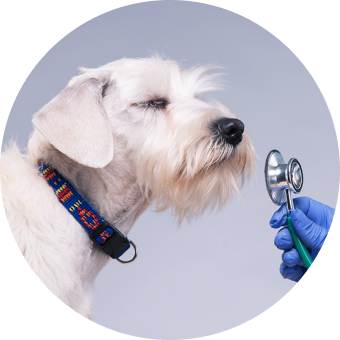

유전질환 조기예측 및
예방관리
마이펫진은 반려동물의 건강하고 행복한 삶을 위한
유전자 검사 서비스입니다.
마이펫진(myPETGENE)은 반려동물 유전자 검사 서비스로, 집에서 간편하게 신청하고 결과를 확인할 수 있습니다. 반려동물의 유전질환을 조기에 예측할 수 있어 식습관 개선, 운동 등 맞춤 관리를 통한 질병 예방이 가능합니다. 또한 해당 DNA로 개체식별 및 혈연관계를 증명하여 반려동물의 분실과 유기를 방지할 수 있습니다.
유전질환 조기예측 및
예방관리
건강한
반려동물 번식

개체식별 통한
분실방지
마이펫진 검사

질병확인서

마이펫진의 유전질환검사는 반려동물로부터 의심되는 유전질환을 확진 하거나 예측하기 위해 수행되며 현재 해당 증상을 보이지 않더라도 유전질환의 가족력이 있거나 증상이 의심되는 경우 검사를 통해 조기진단 및 예방, 치료, 건강관리에 도움을 줄 수 있습니다. 유전질환검사는 반려동물의 DNA를 추출하여 특정질환과 관련된 유전자 돌연변이나 구조적인 이상여부를 분석함으로써 유전질환의발병 가능성 여부를 확인합니다. 유전자는 DNA로 구성된 유전정보로서 단백질을 만드는데 암호화된 특수한 명령체계를 가지고 있습니다. 하지만 다양한 원인에 의해 유전자 돌연변이가 발생하게 되는 경우 정상적인 단백질이 형성되지 않아 질환이 발병하게 됩니다. 이러한 돌연변이는 부모로부터 유전되거나 후천적으로 발생하게 되는데 마이펫진은 부모로부터 유전된 돌연변이 인자를 확인함으로써 유전질환 정보를 얻을 수 있습니다
DNA인증서

마이펫진은 특정 유전자 좌위의 염기서열에서 반복 횟수 차이를 보이는 STR(Short Tandem Repeat) 분석법을 통해 각 개체의 유전자형을 식별합니다. DNA인증서는 반려동물의 시료로부터 DNA를 추출해 고유한 유전적 패턴을 나타내는 방법으로 DNA profiling이라고도 불립니다. 이 검사는 2개 시료의 유전자 좌위를 비교 분석하여 동일한 개체의 DNA인지 식별하며, 해당 DNA정보를 보관하기 때문에 분실 시에도 동일한 개체임을 확인할 수 있습니다. 또한, 반려동물에 대한 소유권 분쟁 시 반려동물의 유전자형을 비교하여 입증하는 증명서로 사용됩니다.
혈연확인서
마이펫진의 혈연관계검사는 반려동물 DNA의 고유한 유전자형을 비교 분석하여 부/모/자 간의 혈연관계를 입증하는 검사입니다. DNA는 유전물질이기 때문에 자식은 부/모로부터 동일한 유전형을 하나씩 물려받아 한 쌍을 이루게 됩니다. 혈연확인서는 본 유전자형이 서로 일치하는지 확인함으로써 과학적인 방법으로 혈연관계를 입증합니다.
성별확인서

전 세계 조류의 50% 이상이 수컷과 암컷의 외형이 유사하여 단순 식별로는 성별을 판별하기 어렵습니다. 인간 염색체의 경우 XX는 여성, XY를 남성으로 식별하는 것처럼 조류의 성염색체는 Z와 W로 구성되어 이를 통해 성별을 식별합니다. 조류의 정자에는 Z염색체가 한 개 들어있고 난자에는 Z 혹은 W가 들어있어 난자에 의해 성별이 정해지게 됩니다. 암컷이 이형 염색체를 가지는 ZW형이고 수컷은 동형 염색체를 가지는 ZZ형입니다. 이러한 암수의 성염색체 차이를 DNA분석을 통해 확인함으로써 조류의 성 감별이 가능합니다.